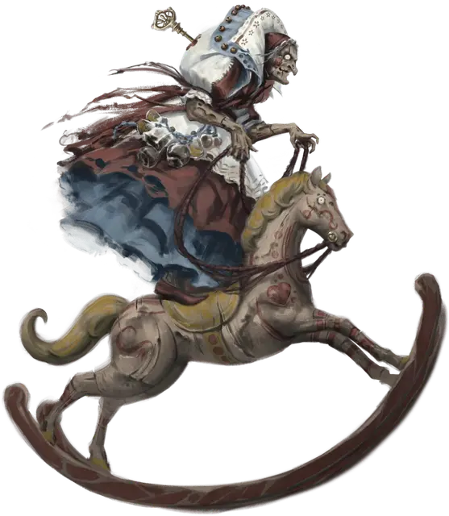

Скабата Пасленовая
Skabatha Nightshade
Средняя Фея (Карга), нейтрально-злая, именной НИП

Класс Доспеха 16 (природный доспех)
Хиты 150 (20к8 + 60)
Скорость 30 футов
| мод | спас | ||
|---|---|---|---|
| СИЛ | 18 | +4 | +4 |
| ЛОВ | 9 | −1 | −1 |
| ТЕЛ | 16 | +3 | +6 |
| мод | спас | ||
|---|---|---|---|
| ИНТ | 12 | +1 | +4 |
| МДР | 16 | +3 | +6 |
| ХАР | 15 | +2 | +5 |
Навыки Восприятие +6, Магия +7, Обман +5, Скрытность +2
Чувства истинное зрение 60 футов, пассивное Восприятие 16
Языки Общий, Инфернальный, Сильван, Эльфийский
Опасность 8 (3900 опыта)
Бонус мастерства +3
Особенности
Дар бессмертия. Скабата невосприимчива к любому воздействию, которое могло бы состарить её и она не может умереть от старости.
Забывчивость. Первое существо, которое Скабата видит после продолжительного отдыха, для нее невидимо. Она не может вспомнить, что видела это существо или воспринимала его своим истинным зрением до конца своего следующего продолжительного отдыха.
Совместное колдовство Шабаша Песочных часов. В редких случаях, когда все три ведьмы Шабаша Песочных часов находятся в пределах 30 футов друг от друга, любая из них может использовать действие, чтобы наложить одно из следующих заклинаний, не требующее материальных компонентов (Сл спасброска от заклинаний 14): обнаружение мыслей [detect thoughts], рассеивание магии [dispel magic], перст смерти [finger of death], находчивость [glibness], поиск существа [locate creature], множественное внушение [mass suggestion].
После того, как заклинание из этого списка было наложено, ни один член шабаша не может наложить это общее заклинание снова до следующего рассвета, когда шабаш восстановит все свои общие заклинания.
Действия
Мультиатака. Скабата совершает две атаки Когтями.
Коготь. . Рукопашная атака оружием: +7 к попаданию, досягаемость 5 футов, одно существо. Попадание: 25 (6к6 + 4) урона ядом.
Использование заклинаний. Скабата накладывает одно из следующих заклинаний, используя Мудрость в качестве базовой характеристики (Сл спасброска от заклинаний 14):
• Неограниченно: обнаружение магии [detect magic], искусство друидов [druidcraft], разговор с животными [speak with animals];
• 2/день каждое: превращение [polymorph], снятие проклятья [remove curse], разговор с растениями [speak with plants];
• 1/день: пробуждение разума [awaken] (накладывается действием), уход в иной мир [plane shift] (только на себя).
Бонусные действия
Изменение размера. Скабата волшебным образом уменьшается до Крошечного размера (от 4 до 8 дюймов в высоту) или возвращается к своему нормальному размеру. Если Скабатхе не хватает места, чтобы вернуться к своему нормальному размеру, она достигает максимально возможного размера в доступном пространстве. Все, что она носит или несёт, меняет размер вместе с ней.
Будучи Крошечным существом, Скабата наносит 2 (1к4) урона ядом, когда попадает атакой Когтём. Она с преимуществом совершает проверки Ловкости (Скрытность) и с помехой проверки и спасброски Силы. В остальном ее статистика остается неизменной.
Описание
Скабата - старейший член Шабаша Песочных часов. Более известная как бабушка Паслен, она предлагает свою помощь тем, кого преследуют сожаления. Её сделки часто приводят к жестоким исходам; например, проситель, который просит воссоединиться с потерянной любовью, может быть превращен в одну из самых дорогих вещей своего любимого человека, например, в любимую шляпку.
Скабата принимает обличье старого мастера игрушек. Частично заводная игрушка, у нее есть заводной ключ между сгорбленными плечами, который быстро вращается, когда она в хорошем настроении, и замедляется, когда её настроение ухудшается. Когда она в ярости, ключ останавливается.